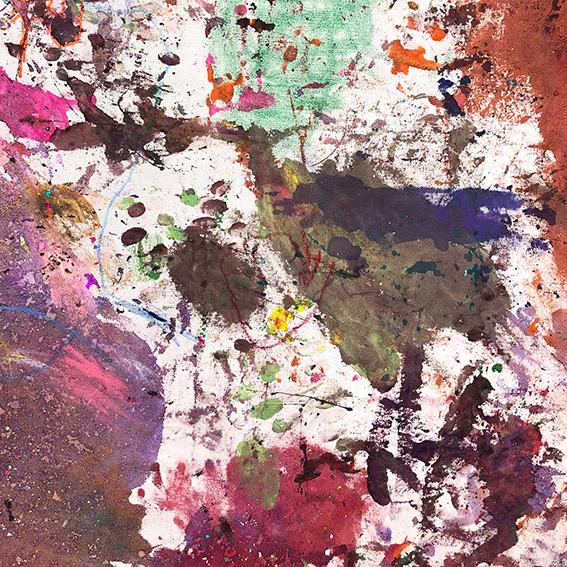
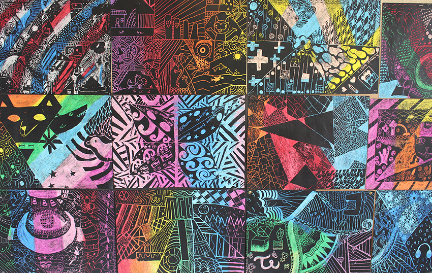
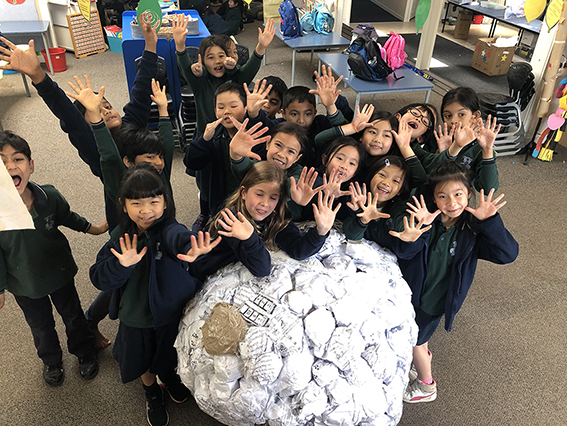
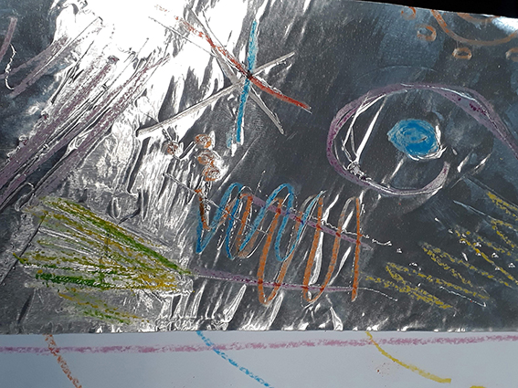
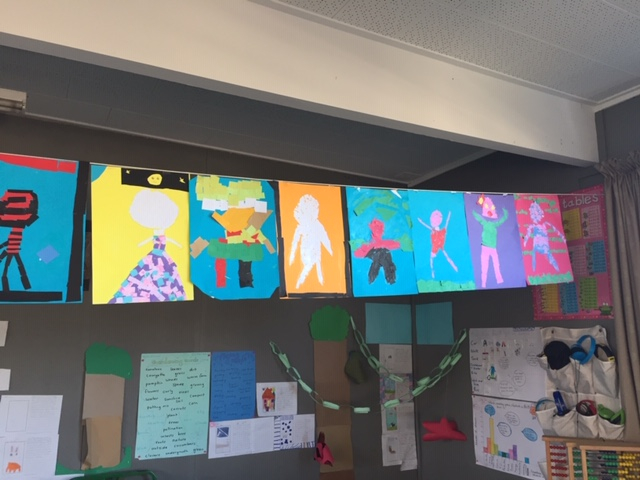

The conceptual framing for this exhibition emerged as a result of an ongoing Art at Work project, a collaborative and accumulative project that is interested in examining the past-present-future relationships between art and education in Aotearoa New Zealand.
BODY MATTER
16-24 NOVEMBER 2019
ST PAUL ST GALLERY THREE
OPENING CELEBRATION:
16TH NOVEMBER 3-5PM
Auckland University of Technology (AUT)
4th Floor, WM Building, St Paul Street, Auckland
This exhibition is curated by members of the Artists in Education Collective Aotearoa (AiECA), the current group of artists, teachers and educators who make up this collective:
Cathlin Ward-Michell
Aya Yamashita
Emma Thomsen
Karen Turner
with Janita Craw and Ophelia King
This year the early childhood centres and schools involved are: New Windsor Primary; Te Atatu Peninsula Intermediate; Epsom Normal Primary School; Tots Corner Childcare; and Whangaparaoa College.
This exhibition is accompanied by a schedule of Squiggla workshops, an opportunity for all to learn to work with a digital app designed for you to take a moment or two, and make art-full marks in response to the different contexts you find yourself in.
While the previous and 1st annual exhibition constructed and curated by this collective was contextualized within a gallery context, this year’s exhibition is held within an ‘art school’ context. Matters and complicity of context are well noted for their problematics, yet context provides meaning to all human endeavours. Hence, contextualizing this exhibition of children’s art makings within a university ‘art school’ context invites all those involved to consider the ‘value’ of art, of child art, of pedagogy, of an education in, with and through art. And. in particular, the important and various roles that art and artists, the audiences, play in the everyday lives of our youngest citizens. In turn, this creates opportunities to explore the important contributions that children, their engagements with art, with artists, with education, offer a democratic society?
The title to of this exhibition, Body Matter, came about as an open provocation that emerged at the beginning of this component of an ongoing art and education exhibition making project – the initial provocation suggested that whatever emerged would centre on, in and around the work of the body. This provocation is premised on an idea that the body, our bodies, is a complex form that both children and adults are curious about, and have a vested interest in. Art educator Richard Huerta suggests, that in educational settings children most often “learn about our body from a physiological perspective …teachers speak to the students of their bodies as if they were not really. Truth is that: our body accompanies us always”. Yet the body is an important medium with which we make art, its physical manifestation, its capabilities and its corporeality often inform art practices. In turn, our interest in the physical and/or other manifestations of art in education, our pursuit in exploring art’s capabilities and its corporeality to inform – and challenge - contemporary educational practices, remains at the heart of this project.
Thinking this way, that way, about the body, about art, about our art making bodies, as something real, that is, as matter, and as something that matters in education, remains a catalyst for the project. In time, this opened up spaces for thinking metaphorically about ourselves, the children, the places and things we work with, as a group, a collective i.e. a body – a complex body, without organs? As such, Body Matter is an exhibition that brings together, it materialises and makes matter the work of a diverse group, a network of people who identify as artists, as children, as teachers and educators. This body of people, their work, have come together, in one way or another, because of a shared interest, a knowledge of, a love of art, as well as an interest in making visible the work we do with art, with our bodies, in different educational settings.
The body of works
Rm 19, New Windsor Primary
with Anya Henis and Jeena Shin
For our second art project with Jeena Shin this year, year 3 and 4 students in Rm 19 are considering the notion of an art gallery; what goes there, who goes there and where it goes.
The students are creating artworks exploring signature, shape and object in their classroom, then travelling to the exhibition to install their works together as a body of work.
Young Children, Tots Corner Childcare
with Emma Thomsen
In collaboration with teachers and young children from Ōtara to Whangaparaoa, four canvases were circulated to pierce the boundaries of twelve closely knit early learning communities. This created opportunities for our young children to encounter the thinking of their peers over a larger geography.
Exhibiting this work in specifically designated art and exhibition making spaces accentuates young children’s capabilities and the macro political empowerment they enact through shared artistic dialogue. The work invites its audiences to be drawn into, enveloped by and seen within, the continuing conversation of citizenship in Tāmaki Makaurau.
Year 7 and 8, Te Atatu Peninsula Intermediate
with Cathlin Ward-Michell
The hardest part about being an intermediate school Visual Art teacher? The strange balance that seems to need to be struck between how I thought I would teach Art to 11 and 12 year olds, 11 and 12 year olds expectations of art and what constitutes a worthy art work - where these expectations come from and the gap that I sometimes feel exists between art education and real world art practice. This gap is a view into a dichotomy.
The problems of traditional education thrown into light by the wonderful and inherent potentials of art.

Rm 26, Epsom Normal Primary School
with Aya Yamashita
What is your favourite way of using your body? Roll... jump... kick... stretch... Our ‘Exercise Ball’ invites you to explore what your bodies are capable of, and think about the feelings you get when using bodies in certain ways.
‘Exercise Ball’ was created out of excess school materials. The students formed this artwork by scrunching, pressing, taping, layering, rolling, fighting, throwing and conversing.
Year 7, Whangaparaoa College
with Karen Turner.
Being creative involves thinking outside the box. But how do you do that? Making artworks with Squiggla offered everyone in our class a non-judgemental mark making exercise involving the use of visual language, of dots and lines, opening up possibilities for being inventive and creative – for being art-istic - using the body, the hand, the eye, and the mind.
The learners experimented inside/outside the classroom in ways they'd never done before – inventing new ways of making. As the project unfolded, the idea of making ‘art’ and ‘exhibition’ challenged us to think outside the box, to literally exhibit the Squiggla works on the outside of boxes, creating our own Squiggla Space.
BUILDING BLOCKS /
BREAKING ROCKS
3-5 OCTOBER 2018
ST PAUL ST GALLERY THREE
CURATED BY:
ANYA HENIS
KATHRYN TULLOCH
JANITA CRAW
IN COLLABORATION WITH CHILDREN FROM:
NEW WINDSOR SCHOOL PARNELL DISTRICT SCHOOL

Building - breaking / Blocks - rocks
I/we love
Playfulness - pleasure
ha (a force)
Testing boundaries
Curioser and curiouser
Trans -it, -ient, -nation, -mission, -formation,
-gression, -cursive, -context Physicality - materiality
Knowledge
Outside the confines
Language, stutter, stammer
Experimentation, possibilities
Building Blocks / Breaking Rocks (2018) draws on the knowledge, expertise and practices of two artists/educators/teachers working in collaboration with a group of children from two local primary schools where, for one reason or another, an art oriented pedagogy is supported and enabled to flourish. For one artist/educator, art emerges because of the school structures that provide resources (including the employment of a qualified artist/educator) for children, across the school, who reveal an interest in art to participate in regular art learning experiences. For the other qualified artist/teacher, art is an identifiable learning area, noted on the weekly programme in anticipation that all children in attendance in that class will engage, with art, its makings
Backdrop:
The conceptual framing for this exhibition emerged as a result of an ongoing Art at Work project, a collaborative and accumulative project that is interested in examining the past-present-future relationships between art and education in Aotearoa New Zealand. Art at Work initially emerged in 2013 as a result of research (with exhibition, see Art at Work: https://www.artandeducation.co.nz/art-at-work-2013 ) in memory of the passing away of educator, Elwyn Richardson, and his relationship with artist, Jim Allen.
Elwyn Richardson’s work that promoted an art(full) inquiry approach to education is well documented in his book, In the early world (1964). The dynamic art (and craft) work that Richardson achieved with children in attendance at Oruaiti Primary School was accomplished because of both, the significance attributed back then to art as an important vital way of knowing the world, as well as the collaborative relationships that existed between Elwyn (i.e. teachers) and artists, such as artist Jim Allen. Back in 1953, when Jim Allen was initially employed by Gordon Tovey as an Art Adviser for the then Department of Education, he was sent up to North for some time to work very closely with Richardson (and the wider communities that surrounded Oruaiti) to develop ways of working with art (and craft), in education, with children, teachers and their families, in the community. The ways that emerged were innovative and responsive to then contemporary theories and technologies that had relevance to both art and education. Recently, in part, because of considerable concern regarding the status of art in education, this history, other local histories, have ignited considerable interest (see, for example, Bieringa, 2016; Craw & O’Sullivan, 2016; MacDonald, 2016; O’Sullivan & Craw, 2015).
Overtime, the practice of artists working collaboratively and productively with teachers in ways that ensures that rich and diverse learning outcomes are achieved for ALL children has been explored in a number of ways, in different contexts. In particular, the ongoing highly influential art and education project work that has emerged from the Reggio Emilia schools in Italy (see Vecchi, 2010), this work has had considerable international influence. While there have been and are attempts to establish something similar in Aotearoa NZ, without ongoing government support these endeavours fail to thrive in any significant way. Since specific funding budgets for art in primary schools was cut in 2010, the mandate for literacy and numeracy has accumulated an extra strong hold. This emphasis has resulted in a considerable absence of any informative knowledge and understanding of (contemporary) art practices, its resources and facilities, in schools - something that is also reflected in many initial teacher education (ITE) university’s modern learning environments, and in their programmes offered to student teachers.
...the arts ...are integral and inseparable parts of what it is to be human... The challenge ... is that the benefits of art, ...[is] not always readily available to every New Zealander. [It] should be. Every one of us
Jacinda Adern1, Minister of Arts, Culture & Heritage, 2018
We have yet to understand the current policy directions for art in education as they might (not) be reflected in the recent speeches delivered by Jacinda Adern, our Minister for Arts, Culture & Heritage. In an earlier speech, Adern states, “[a]rts and culture are not a ‘nice to have’. They are an essential part of our individual, community and national identity. For too long they have been treated differently when it comes to sustainable growth, career paths and economic benefits,” (n.p.). Adern’s speeches emphasise the importance of galleries and museums, the sustainability of art in our communities, this is so great. The ‘pedagogical turn’ discourses in art are very much alive, and effective: the galleries, museums and other community sites that are taking up this challenge and making art available in the community, to wider audiences, are gaining considerable momentum, perhaps. With and alongside this, the business of art education is growing too. However, what’s missing in Adern’s speeches is any articulated wisdom that makes the connections with how essential the benefits of art might be being played out (yet), let alone be readily available in the everyday lives of ALL children within the childhood milieu of its more formal public educational institutions.
Making public – we’re all in this together
Building Blocks / Breaking Rocks (2018) positions children’s art works, once again, outside of education, in the public world of art. This positioning can be understood as an act of aesthetic experimentation with places where traditionally still dominant somewhat hierarchical, if not mythical, categorisations easily prevail: artist/audience, art/pedagogy, art/education-education/art, teacher/student, adult/child, nature/nurture. It is anticipated that this exhibition-making act(ivism) will contribute to a disruption of the restrictive discourses that inform a knowledge of child, and/or other, identities and the easy categorisations that persist...
A collective assemblage of desire:
“...is not an individual feature, but rather a feature of the ‘pack’. We exist in ‘packs’ and we do unconsciously. We... must avoid all attempts to ‘speak for the other’ ...in favour of focusing the ...childhood milieu and the staging of places where collective assemblages of desire can construct themselves in unexpected not yet defined ways.
(Olsson, Dhalberg & Theorell, 2016, p. 736).
Both building and breaking are construction site activities, blocks and rocks are construction site tools – these activities and tools are synonymous with childhood. We are hopeful that positioning children’s art work in the gallery, a site where art is staged, culture and knowledge are produced, contributes something to constructing spaces that are capable of contesting and offering alternative child- identity discourses, ones that enable the milieu of childhood, of children, to be immersed in the wholeness of that which they/we are studying – art, life? As a result, it is expected that the child- art practices that emerge inside/outside education develop a capacity to widen the engaging (with) art offerings available to and with children – and others in their lives. Children, their families, art, artists, teachers, and educators, as a result, will experience a greater sense of knowing art and the aesthetic agency art, its makings, offer - in much more than ‘nice to have’ ways, but rather in complex ways that are recognised as integral and inseparable parts of what it means to be child, human.